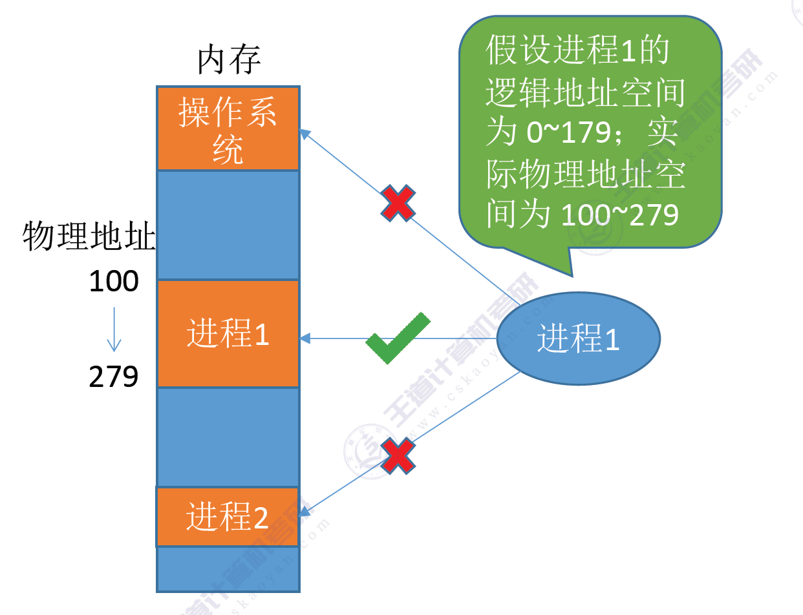

内存概述
内存概述
内存
内存可以存放数据。程序执行前需要先放到内存中才能被CPU处理————缓和CPU和硬盘之间的速度矛盾。
内存编址
在多道程序环境下，系统中会有多个程序并发执行，也就是说会有多个程序的数据需要同时放到内存中。那么，如何区分各个程序的数据是放在什么地方的呢？
我们可以给内存编址
程序运行原理
- 程序经过编译、链接后生成的指令中指明的是逻辑地址（相对地址），即：相对于进程的起始地址而言的地址。
- 程序装入内存运行，操作系统会将程序中的逻辑地址转换为物理地址进行装入。

如果将程序调入了其他进程的地址空间中，就会导致内存资源混乱。有三种装入内存的方式。
程序装入
绝对装入
绝对装入：在编译时，如果知道程序将放到内存中的哪个位置，编译程序将产生绝对地址的目标代码。装入程序按照装入模块中的地址，将程序和数据装入内存。
举例：如果知道装入模块要从地址为 100 的地方开始存放。

绝对装入只适用于单道程序环境。程序中使用的绝对地址，可在编译或汇编时给出，也可由程序员直接赋予。通常情况下都是编译或汇编时再转换为绝对地址。
可重定位装入
又称可重定位装入。编译、链接后的装入模块的地址都是从0开始的，指令中使用的地址、数据存放的地址都是相对于起始地址而言的逻辑地址。可根据内存的当前情况，将装入模块装入到内存的适当位置。装入时对地址进行重定位，将逻辑地址变换为物理地址（地址变换是在装入时一次完成的）。

静态重定位的特点是在一个作业装入内存时，必须分配其要求的全部内存空间，如果没有足够的内存，就不能装入该作业。作业一旦进入内存后，在运行期间就不能再移动，也不能再申请内存空间。
运行时动态装入
又称动态运行时装入。编译、链接后的装入模块的地址都是从0开始的。装入程序把装入模块装入内存后，并不会立即把逻辑地址转换为物理地址，而是把地址转换推迟到程序真正要执行时才进行。因此装入内存后所有的地址依然是逻辑地址。这种方式需要一个重定位寄存器的支持。


程序链接
链接：由链接程序将编译后形成的一组目标模块，以及所需要的库函数链接在一起，形成一个完整的装入模块。
装入：由装入程序将装入模块装入内存运行。
静态链接
静态链接：在程序运行之前，现将各目标模块及他们所需的库函数，连接成一个完整的可执行文件，之后不在拆开。

装入时动态链接
装入时动态链接：将各目标模块装入内存是，边装入边链接的链接方式。

运行时动态链接
运行时动态链接：在程序执行中需要该目标模块式，才对它链接。其优点便于修改和更新，便于实现对目标模块的共享。

内存管理功能
操作系统负责内存空间的分配和回收：
- 确定进程地址空间的映射位置。
- 确定记录内存空间的分配情况：空闲还是占用？
- 确定进程运行结束之后内存空间的回收。
操作系统需要提供某种技术从逻辑上对内存空间的进行拓充
操作系统需要提供地址转换功能，负责程序的逻辑地址和物理地址的装换
- 为了使编程更方便，程序员在编写程序的时候只需要关注指令、数据的逻辑地址。而逻辑地址到物理地址的转换应该有操作系统负责。（三种程序装入方式）
操作系统需要提供内存保护功能，负责保护各进程在各自存储空间内运行，互不干扰。
内存保护
内存保护采用两种方法：
方法一：在CPU中设置一对上，下限寄存器，存放进程的上下限地址。进程的指令要访问某个地址时，CPU检查是否越界。
举例：CPU的上限寄存器为100，下限寄存器为279，当CPU访问的地址不在上下限寄存器地址空间范围是就会触发越界访问。
方法二：采用重定位寄存器（又称基址寄存器）和界地址寄存器进行越界检查。界地址寄存器中存放的是进程的最大逻辑地址。

举例：界寄存器为170，重定位寄存器为100，当CPU访问的虚拟地址为80时，先检查是否超出界地址寄存器访问，如果超出，则触发越界访问。否则通过重定位寄存器将虚拟地址转为物理地址去访问180内存单元。